특수용접기능사 (2011-07-31 기출문제)
1과목: 용접일반
1. 아세틸렌가스와 접촉하여도 폭발성 화합물을 생성하지 않는 것은?
- Fe
- Cu
- Ag
- Hg
(정답률: 64%)

2. 가스 용접시 모재의 두께가 2.0㎜일 때 용접봉의 지름을 계산식에 의해 구하면 몇 ㎜인가?
- 2.0
- 2.6
- 3.2
- 4.0
(정답률: 76%)
3. 연강용 피복 금속 아크 용접봉의 종류 중에서 E4313의 피복제 계통은?
- 일루미나이트계
- 라임티타니아계
- 철분산화티탄계
- 고산화티탄계
(정답률: 84%)
4. 다음 그림은 모재 위에 피복 아크 용접으로 용접한 용접부의 단면 형상이다. 각각의 기호에 대한 설명이 틀린 것은?
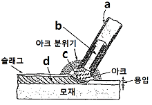
- a : 피복제
- b : 심선
- c : 용접 비드
- d : 용착 금속
(정답률: 79%)
5. 산소 아세틸렌가스를 이용하여 용접할 때 사용하는 산소 압력 조정기의 취급에 관한 설명 중 틀린 것은?
- 산소 용기에 산소 압력 조정기를 설치할 때 압력 조정기 설치구에 있는 먼지를 털어내고 연결한다.
- 산소 압력 조정기 설치구 나사부나 조정기의 각 부에 그리스를 발라 잘 조립되도록 한다.
- 산소 압력 조정기를 견고하게 설치한 후 가스 누설 여부를 비눗물로 점검한다.
- 산소 압력 조정기의 압력 지시계가 잘 보이도록 설치하여 유리가 파손되지 않도록 주의한다.
(정답률: 88%)
6. 내용적 40.7 리터의 산소병에 150kgf/cm2의 압력이 게이지에 표시되었다면 산소병에 들어 있는 산소량은 몇 리터인가?
- 3400
- 4⑤5
- 5⑤5
- 61⑤
(정답률: 72%)
7. 가스 절단에서 예열 불꽃이 강한 경우 미치는 영향이 아닌 것은?
- 모서리가 용융되어 둥글게 된다.
- 드래그가 증가한다.
- 슬래그 중의 철 성분의 박리가 어렵게 된다.
- 절단면이 거칠게 된다.
(정답률: 71%)
8. 미국에서 개발된 것으로 기계적인 진동이 모재의 융점 이하에서도 용접부가 두 소재 표면 사이에서 형성되도록 하는 용접은?
- 테르밋 용접
- 원자수소 용접
- 금속 아크 용접
- 초음파 용접
(정답률: 62%)
9. 산소-아세틸렌가스 용접에 대한 장점 설명으로 틀린 것은?
- 운반이 편리하다.
- 후판 용접이 용이하다.
- 아크 용접에 비해 유해 광선이 적다.
- 전원 설비가 없는 곳에서도 쉽게 설치할 수 있다.
(정답률: 73%)
10. 아크 용접기의 코일이 1차 코일과 2차 코일이 같은 철심에 감겨져 있고 대개 2차 코일은 고정하고 1차 코일을 이동하여 두 코일간의 거리를 조절하여 전류를 조정하는 용접기는?
- 가동 철심형
- 가동 코일형
- 텝 전환형
- 가포화 리액터형
(정답률: 68%)
11. 가스 용접시 사용하는 용제에 대한 설명으로 틀린 것은?
- 용제의 융점은 모재의 융점보다 낮은 것이 좋다.
- 용제는 용융 금속의 표면에 떠올라 용착 금속의 성질을 양호하게 한다.
- 용제는 용접 중에 생기는 금속의 산화물 또는 비금속 개재물을 용해하여 용융 온도가 높은 슬래그를 만든다.
- 연강에는 용제를 일반적으로 사용하지 않는다.
(정답률: 53%)
12. 용접봉의 분류에서 용적이 모재에 이행하는 형식에 따라 용접봉을 분류한 것이 아닌 것은?
- 스프레이형
- 슬래그형
- 글로뷸러형
- 단락형
(정답률: 73%)
13. 피복 아크 용접봉의 피복제(flux) 연소시 용접부 보호 형식에 속하지 않는 것은?
- 가스 발생식
- 슬래그 생성식
- 반가스 발생식
- 반슬래그 생성식
(정답률: 74%)
14. 아크 발생 초기에 용접봉과 모재가 냉각되어 있어 입열이 부족하면 아크가 불안정하기 때문에 아크 초기에만 용접 전류를 크게 해주는 장치는?
- 전격 방지 장치
- 원격 제어 장치
- 핫 스타트 장치
- 고주파 발생 장치
(정답률: 90%)
15. 가스 가공의 분류에 해당되지 않는 것은?
- 가우징
- 스카핑
- 천공
- 용제 절단
(정답률: 44%)
16. 알루미늄을 가공하기 위하여 아크 에어 가우징 작업을 할 때의 전원 특성으로 가장 적당한 것은?
- DCRP(직류 역극성)
- DCSP(직류 정극성)
- ACRP(교류 역극성)
- ACSP(교류 정극성)
(정답률: 61%)
17. 일반 가스 용접 및 아크 용접보다 낮은 온도에서 용접하며, 용접봉은 모재와 같은 공정 합금을 사용하는 용접법은?
- 열풍 용접
- 마찰 용접
- 고주파 용접
- 저온 용접
(정답률: 80%)
18. 전영성이 매우 커서 10-6cm 두께의 박판으로 가공할 수 있으며, 왕수(王水) 이외에는 침식, 산화되지 않는 금속은?
- 구리(Cu)
- 알루미늄(Al)
- 금(Au)
- 코발트(Co)
(정답률: 57%)
19. 다음 중 열전도율이 가장 작은 것은?
- 알루미늄
- 은
- 구리
- 납
(정답률: 63%)
20. 주조 시 주형에 냉금을 삽입하여 주물 표면을 급냉시킴으로서 백선화하고 경도를 증가시킨 내마모성 주철은?
- 가단주철
- 칠드주철
- 고급주철
- 미하나이트주철
(정답률: 52%)
21. 절삭 공구강의 일종으로 500~600℃까지 가열해도 뜨임 효과에 의해 연화되지 않고 고온에서도 경도의 감소가 적은 특징이 있는 것은?
- 다이스강
- 게이지용강
- 고속도강
- 스프링강
(정답률: 64%)
22. 담금질한 철강을 Ar 변태점 이하의 일정한 온도로 가열하여 인성을 증가시킬 목적으로 조작하는 열처리법은?
- 뜨임
- 불림
- 풀림
- 담금질
(정답률: 56%)
23. 황동의 가공재를 상온에서 방치하거나 저온 풀림 경화시킨 스프링재가 사용도중 시간의 경과에 따라 경도 등 여러 가지 성질이 약화되는 성질을 무엇이라고 하는가?
- 자연 변화
- 가공 경화
- 경년 변화
- 부식 변화
(정답률: 69%)
24. 탄소 함유량이 0.2% 이하인 탄소강 주강품의 종류의 기호로 맞는 것은?
- SC 360
- SC 410
- SC 450
- SC 480
(정답률: 62%)
25. 탄소강에 적당한 원소를 첨가하면 본래의 성질을 현저하게 개선하거나 새로운 특성을 가지게 하는데 강인성, 내식성, 내산성, 저온 충격저항을 증가시키는 효과를 가지는 합금 원소로 가장 적당한 것은?
- 니켈(Ni)
- 코발트(Co)
- 망간(Mn)
- 몰리브덴(Mo)
(정답률: 41%)
26. 주조용 알루미늄 합금 중 유동성이 좋아 복잡한 형상의 조조에 사용되는 것은?
- 알루미늄-주철계 합금
- 알루미늄-규소계 합금
- 알루미늄-니켈계 합금
- 알루미늄-아연계 합금
(정답률: 41%)
27. 스테인리스강에 관한 설명으로 옳은 것은?
- 18-8형 스테인리스강은 니켈 18%, 크롬 8%를 기준으로 한 것이다.
- 스테인리스강은 13형 니켈 스테인리스강과 18-8형 니켈 크롬강으로 대별한다.
- 13형 크롬 스테인리스강을 페라이트계 스테인리스강이라고도 한다.
- 스테인리스강의 종류에는 페라이트계, 펄라이트계, 오스테나이트계, 소르바이트계가 있다.
(정답률: 38%)
28. 고주파 경화법의 특징 설명으로 틀린 것은?
- 급열, 급랭으로 인하여 재료가 변형되는 경우가 있다.
- 마텐자이트 생성에 의한 체적 변화 때문에 내부 응력이 발생한다.
- 가열 시간이 짧으므로 산화 및 탈탄의 염려가 많다.
- 경화층이 이탈되거나 담금질 균열이 생기기 쉽다.
(정답률: 50%)
29. 아크 광선에 의한 전광선 안염이 발생하였을 때의 응급조치로 가장 올바른 것은?
- 안약을 넣고 수면을 취한다.
- 냉습포 찜질을 한 다음 치료를 받는다.
- 소금물로 찜질을 한 다음 치료한다.
- 따뜻한 물로 찜질을 한 다음 치료한다.
(정답률: 79%)
30. 용접 결함과 그 원인을 서로 짝지어 놓은 것 중 잘못된 것은?
- 언더컷 - 용접 전류가 너무 높을 때
- 용입 불량 - 용접 속도가 너무 느릴 때
- 오버랩 - 용접 전류가 너무 낮을 때
- 기공 - 용접 분위기 중 수소, 일산화탄소가 많을 때
(정답률: 69%)
31. 이산화탄소 아크 용접의 특징이 아닌 것은?
- 전원은 교류 정전압 또는 수하 특성을 사용한다.
- 가시 아크이므로 시공이 편리하다.
- 모든 용접 자세로 용접이 가능하다.
- 산화나 질화가 되지 않는 양호한 용착 금속을 얻을 수 있다.
(정답률: 54%)
32. 용접에서 결함이 언더컷일 경우 보수 방법으로 가장 적당한 것은?
- 용접부에 홈을 만들어 다시 용접한다.
- 결함 부분을 깎아내고 다시 용접한다.
- 결함 부분에 홈을 만들어 용접한다.
- 지름이 작은 용접봉을 사용하여 용접한다.
(정답률: 72%)
33. CO2 가스 아크 용접에서 후진법에 비교한 전진법의 특징 설명으로 맞는 것은?
- 용융 금속이 앞으로 나가지 않으므로 깊은 용입을 얻을 수 있다.
- 용접선을 잘 볼 수 있어 운봉을 정확하게 할 수 있다.
- 스패터의 발생이 적다.
- 비드 높이가 약간 높고 폭이 좁은 비드를 얻는다.
(정답률: 53%)
34. 피복아크 용접에서 언더컷(under cut) 발생 시 방지 대책으로 맞는 것은?
- 용접 속도를 빠르게 한다.
- 유황 함량을 검사한다.
- 적정한 용접봉을 선택하여 사용한다.
- 아크 길이를 길게 한다.
(정답률: 74%)
35. 산업용 용접 로봇 구성의 작업 기능으로 잘못된 것은?
- 동작 기능
- 구속 기능
- 이동 기능
- 교시 기능
(정답률: 66%)
2과목: 용접재료
36. 전자 렌즈에 의해 에너지를 집중시킬 수 있고 고용융 재료의 용접이 가능한 용접법은?
- 레이저 용접
- 그래비티 용접
- 전자 빔 용접
- 초음파 용접
(정답률: 68%)
37. 다음 중 연납땜의 종류에 해당되지 않는 것은?
- 주석-납
- 납-카드뮴납
- 납-은납
- 인-망간납
(정답률: 51%)
38. CO2 가스 아크 용접에 대한 설명으로 틀린 것은?
- 전류를 높게 하면 와이어의 녹아내림이 빠르고 용착률과 용입이 증가한다.
- 아크전압을 높이면 비드가 넓어지고 납작해지며, 지나치게 아크 전압을 높이면 가포가 발생한다.
- 아크 전압이 너무 낮으면 볼록하고 넓은 비드를 형성하며, 와이어가 잘 녹는다.
- 용접 속도가 빠르면 모재의 입열이 감소되어 용입이 얕아지고 비드 폭이 좁아진다.
(정답률: 71%)
39. 서브머지드 아크 용접의 일반적인 특징으로 틀린 것은?
- 고전류 사용이 가능하다.
- 용융 속도가 빨라 고능률 용접이 가능하다.
- 기계적 성질(강도, 연신율, 충격치 등)이 우수하다.
- 개선각을 크게 하여 용접 패스 수를 줄일 수 있다.
(정답률: 73%)
40. 용접 지그(welding jig) 사용시 효과를 가장 바르게 설명한 것은?
- 제품의 마무리 정밀도가 떨어진다.
- 용접 변형을 촉진한다.
- 작업 시간이 길어진다.
- 다량 생산의 경우 작업 능률이 향상된다.
(정답률: 89%)
41. 불활성 가스 금속 아크(MIG) 용접의 특징 설명으로 옳은 것은?
- 바람의 영향을 받지 않아 방풍 대책이 필요 없다.
- TIG 용접에 비해 전류 밀도가 높아 용융 속도가 빠르고 후판 용접에 적합하다.
- 각종 금속 용접이 불가능하다.
- TIG 용접에 비해 전류 밀도가 낮아 용접 속도가 느리다.
(정답률: 73%)
42. 전기 저항 용접의 특징 설명으로 틀린 것은?
- 작업 속도가 빠르고 대량 생산에 적합하다.
- 산화 및 변질 부분이 적다.
- 열손실이 많고 용접부에 집중열을 가할 수 없다.
- 용접봉, 용제 등이 불필요하다.
(정답률: 74%)
43. 용접 균열에 대한 대책이 아닌 것은?
- 응력이 집중되게 한다.
- 용접 시공을 적정하게 한다.
- 나쁜 강재를 사용하지 않는다.
- 용접부에 노치 부분을 만들지 않는다.
(정답률: 74%)
44. 용접에 의한 수축 변형에 영향을 미치는 인자로 거리가 먼 것은?
- 가접
- 용접 입열
- 판의 예열 온도
- 판 두께의 이음 형상
(정답률: 68%)
45. 용접부의 열영향부에 대하여 설명한 것 중 틀린 것은?
- 열영향부에 인접한 모재 중 약 200~700℃로 가열된 부분에서는 현미경 조직의 변화를 볼 수 있다.
- 결정립의 조대화 또는 재결정 및 기계적 성질과 물리적 성질의 변화가 나타나는 영역이 있다.
- 연강의 경우 준열영향부는 노치인성이 저하하므로 취성영역이라고도 한다.
- 오스테나이트강, 페라이트강, 동 합금, 알루미늄 합금 등에서는 변태가 되지 않으므로 펄라이트강과 같이 분명한 열영향부를 용접 단면의 매크로 조직에서 보기 힘들다.
(정답률: 35%)
46. 안전모의 내부 수직 거리로 가장 적당한 것은?
- 25㎜ 이상 40㎜ 미만일 것
- 15㎜ 이상 40㎜ 미만일 것
- 10㎜ 이상 30㎜ 미만일 것
- 25㎜ 이상 50㎜ 미만일 것
(정답률: 62%)
47. 용접부의 검사에서 교류의 자장에 의해 금속 내부에 와류(Eddy Current) 작용을 이용하는 것은?
- 초음파 검사
- 방사선 투과 검사
- 자분 검사
- 맴돌이 전류 검사
(정답률: 65%)
48. 연강 용접 이음의 안전율은 정하중일 때 얼마로 하는 것이 가장 적당한가?
- 3
- 5
- 8
- 12
(정답률: 42%)
49. 자동 금속 아크 용접법으로 모재의 이음 표면에 미세한 입상 모양의 용제를 공급하고 용제 속에 연속적으로 전극 와이어를 송급하여 모재 및 전극 와이어를 용융시켜 용접부를 대기로부터 보호하면서 용접하는 것은?
- 불활성 가스 아크 용접
- 탄산가스 아크 용접
- 서브머지드 아크 용접
- 일랙트로 슬래그 용접
(정답률: 60%)
50. 테르밋 용접에서 미세한 알루미늄 분말과 산화철 분말의 중량비로 가장 올바른 것은?
- 1~2 : 1
- 3~4 : 1
- 5~6 : 1
- 7~8 : 1
(정답률: 67%)
3과목: 기계제도
51. 일반적인 판금 작업에서의 전개도를 그리는 방법이 아닌 것은?
- 삼각형 전개법
- 사각형 전개법
- 평행선 전개법
- 방사선 전개법
(정답률: 44%)
52. 그림과 같은 입체도의 화살표 방향을 정면으로 할 때 우측면도로 적합한 투상은?
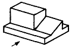
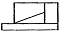
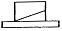
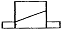
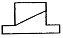
(정답률: 81%)
53. 다음 용접부의 보조 기호 중 일주(온둘레) 용접 기호는?
(정답률: 75%)
54. 그림에서 ‘6.3’선이 나타내는 선의 종류로 옳은 것은?
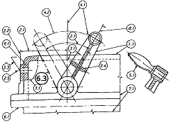
- 가상선
- 절단선
- 중심선
- 숨은선
(정답률: 76%)
55. 3각법으로 투상한 그림과 같은 정면도와 평면도에 좌측면도로 적합한 것은?
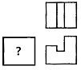
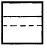
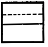
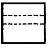
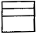
(정답률: 69%)
56. 다음 그림에서 화살표 방향이 정면도일 경우 평면도로 옳은 것은?
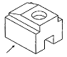
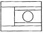
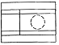
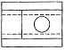
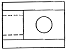
(정답률: 79%)
57. 다음 도면에서 지름이 6㎜의 구멍의 수는 모두 몇 개인가?
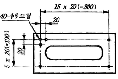
- 38
- 40
- 42
- 44
(정답률: 84%)
58. 다음 배관 도시기호 중에서 확장 조인트를 나타낸 도시기호는?
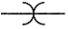
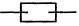
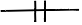
(정답률: 55%)
59. 모떼기의 치수가 2㎜이고 각도가 45°일 때 올바른 치수 기입 방법은?
- C2
- 2C
- 2-45°
- 45°×2
(정답률: 57%)
60. 그림과 같은 기계 제도에서 단면도에서 A 가 나타내는 것은?
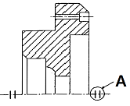
- 단면도 표시 기호
- 바닥 표시 기호
- 대칭 도시 기호
- 평면 기호
(정답률: 64%)